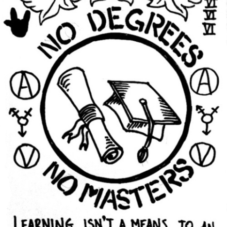

Illich was born in
Vienna to a Croatian Catholic father, engineer Ivan Peter Illich, and a Sephardic Jewish mother, Ellen née Regenstreif-Ortlieb. His maternal grandmother was from Texas. Illich spoke Italian, Spanish, French, and German fluently. He later learned Croatian, the language of his grandfathers, then Ancient Greek and Latin, in addition to Portuguese, Hindi, English, and other languages. He studied histology and crystallography at the University of Florence (Italy) as well as theology and philosophy at the Pontifical Gregorian University in Rome (from 1942 to 1946), and medieval history in Salzburg.

He wrote a dissertation focusing on the historian Arnold J. Toynbee and would return to that subject in his later years. In 1951, he "signed up to become a parish priest in one of New York’s poorest neighborhoods—Washington Heights, on the northern tip of Manhattan, at that time a barrio of newly-arrived Puerto Rican immigrants." In 1956, at the age of 30, he was appointed vice rector of the Catholic University of Puerto Rico, "a position he managed to keep for several years before getting thrown out—Illich was just a little too loud in his criticism of the Vatican's pronouncements on birth control and comparatively demure silence about the bomb." It was in Puerto Rico that Illich met Everett Reimer and the two began to analyze their own functions as "educational" leaders. In 1959, he traveled throughout South America on foot and by bus.